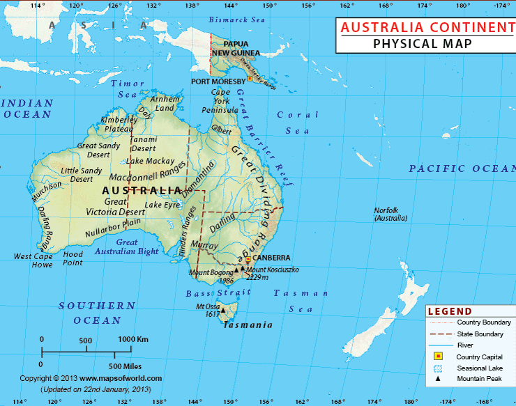

Australia
About Australia
The continent of Australia, sometimes known in technical contexts by the names Sahul, Australinea, or Meganesia to distinguish it from the country of Australia, consists of the landmasses which sit on Australia's continental plate. The continent includes mainland Australia, Tasmania, and the island of New Guinea, which consists of Papua New Guinea and Western New Guinea (a province of Indonesia). Situated in the geographical region of Oceania, Australia is the smallest of the seven traditional continents.Area: 8.6 million km²
Population density: 4.2 per km2 / 11 per square mile
Population: 39 million
(All Information Taken from Wikipedia)

Map of Australia